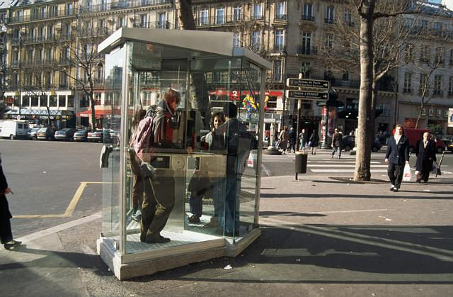

The pronunciation of final consonants in the present subjunctive
Structure
Review of
Il faut
The formation of the present subjunctive; the subjunctive after
il faut que
The formation of the present subjunctive of irregular verbs; the use
of the subjunctive after
je veux que
and
il est possible que
The formation of the present subjunctive of variable stem verbs; the
subjunctive after
je propose que
and other expressions
Subjunctive of verbs with spelling changes
Prepositions with cities and countries
Expressing one’s reaction to beauty
Introduction En Français
Fonctions
Conclure à base de preuves
Comment convaincre qqn
Comment justifier un plan d’action
Prononciation
La prononciation des consonnes finales au subjonctif
Structure
Révision de
Il faut
La formation du présent du subjonctif; l’emploi du subjonctif après
il faut que
La formation du présent du subjonctif des verbes irréguliers;
l’emploi du subjonctif après
je veux que
et
il est possible que
La formation du présent du subjonctif; l’emploi du subjonctif après
je propose que
et d'autres expressions
La formation du présent du subjonctif des verbes à variation
orthographique
L’emploi des prépositions avec les noms de lieu
Exprimer sa réaction à la beauté
1. Conversation
Éliane
Régine, regarde ce que Baudoin nous a donné: deux petits bouts
de papier qu’il a trouvés dans la corbeille de M. Toësca.
ce que
what
ce que Baudoin nous a donné
what Baudoin gave us
la corbeille
basket, wastebasket
Régine, regarde ce que Baudoin nous a donné: deux petits bouts
de papier qu’il a trouvés dans la corbeille de M. Toësca.
Régine, look what Baudoin gave us: two little pieces of paper
that he found in Mr. Toësca’s wastebasket.
Paul
C’est le coin d’un timbre suisse. Il ne reste pas grand chose
du cachet de la poste.
le timbre
postage stamp
le coin d’un timbre suisse
the corner of a Swiss stamp
rester
to be left
il ne reste pas grand chose
not much is left
le cachet de la poste
postmark
Il ne reste pas grand chose du cachet de la poste.
Not much of the postmark is left.
C’est le coin d’un timbre suisse. Il ne reste pas grand chose
du cachet de la poste.
It’s the corner of a Swiss stamp. There's not much of the
postmark left.
Éliane
Tu arrives à déchiffrer le nom de la ville?
arriver à faire qqch
to manage to do something, succeed in doing something
déchiffrer
to decode, figure out
déchiffrer le nom de la ville
figure out the name of the city
Tu arrives à déchiffrer le nom de la ville?
Can you figure out the name of the city?
Régine
Attends, il faut que je regarde de plus près. Ça y est, j’y
suis. Je suis sûre qu’il s’agit du village de Verbier.
regarder de près
to look closely
regarder de plus près
to look more closely
je regarde de plus près
I’m looking more closely
il faut que (+ subjunctive)
you have to, one must, it is necessary that
Il faut que je regarde de plus près.
I have to look more closely.
Ça y est!
That’s it!
J’y suis!
I’ve got it! Now I know!
il s’agit de
it’s about, it’s a question of, it’s a matter of
Il s’agit du village de Verbier.
It’s about the village of Verbier.
Attends, il faut que je regarde de plus près. (show Régine
thinking) Ça y est, j’y suis. Je suis sûr qu’il s’agit du
village de Verbier.
Wait. I have to look more closely. That’s it! I’ve got it! I’m
sure it’s (a question of) the village of Verbier.
Paul
Verbier? C'est où?
C'est où?
Where’s that? (colloquial)
Verbier? C'est où?
Verbier? Where’s that?
Régine
Verbier, c’est une station de ski dans le Valais. En été on y
monte un festival de musique important. Le paysage est
magnifique.
le ski
skiing
une station de ski
a ski resort
le Valais
Valais - a Swiss canton
un festival
festival
la musique
musique
un festival de musique
a music festival
un festival de musique important
a major music festival
monter
to set up, organize
monter un festival de musique
to organize a music festival
le paysage
scenery, landscape
magnifique
magnificent, gorgeous.
Verbier, c’est une station de ski dans le Valais. En été on y
monte un festival de musique important. Le paysage est
magnifique.
Verbier is a ski resort in the Valais. In the summer they
organize a major music festival there. The scenery is
magnificent.
Daniel
C’est loin de Genève?
C’est loin de Genève?
Is it far from Geneva?
Régine
À 170 km, à trois heures de train. Ma famille et moi, on y
allait souvent quand j’étais petite.
cent soixante-dix
one hundred seventy
à cent soixante dix kilomètres
170 kilometers (away)
à trois heures de train
a three-hour train ride (lit. three hours away by train)
on y allait
we used to go there
j’étais petite
I was little., I was a child.
À 170 km, à trois heures de train. Ma famille et moi, on y
allait souvent quand j’étais petite.
One hundred seventy kilometers – a three-hour train ride. My
family and I used to go there when I was a child.
Paul
Alors, il faut qu’on aille à Verbier. Je propose qu’on parte
en Suisse après-demain.
aille
subjunctive of aller
il faut qu’on aille
we have to go
Il faut qu’on aille à Verbier.
We have to go to Verbier.
proposer
to propose, suggest
proposer que + subjunctive
to suggest that someone do something
qu’on parte
that we leave (subjunctive)
après-demain
day after tomorrow
Alors, il faut qu’on aille à Verbier. Je propose qu’on parte
en Suisse après demain.
Well then, we have to go to Verbier. I suggest that we leave
for Switzerland the day after tomorrow.
Daniel
Tu es fou? Qu’est-ce que tu veux qu’on y fasse? Du tourisme?
fou (feminine: folle, before masculine noun beginning with a
vowel: fol)
crazy, mad
tu veux que + subjunctive
you want (someone to do something)
qu’on y fasse
that we do there (subjunctive of faire)
le tourisme
tourism, sightseeing
faire du tourisme
to go sightseeing
Tu es fou? Qu’est-ce qu’on y fasse? Du tourisme?
Are you crazy? What do you want us to do there? Go
sightseeing?
Régine
Non, il faut qu’on cherche M. Toësca et qu’on lui réclame les
disquettes avec les fichiers volés.
il faut qu’on cherche
we have to look for
réclamer
to demand, ask for something back
réclamer qqch à qqn
to demand something back from someone
il faut qu’on lui réclame les disquettes
we have to demand that he give the diskettes back to us
voler
to steal
les fichiers volés
the stolen files
Non, il faut qu’on cherche M. Toësca et qu’on lui réclame les
disquettes avec les fichiers volés.
No. We’ve got to look for Mr. Toësca and ask him to give the
diskettes back to us.
Éliane
Tu es sûre qu’il les a? Après tout, on n’a pas de preuves,
seulement des soupçons. Ce n’est pas logique.
après tout
after all
une preuve
piece of evidence
on n’a pas de preuves
we have no proof
un soupçon
suspicion
seulement des soupçons
only suspicions
logique
logical
Tu es sûre qu’il les a? Après tout, on n’a pas de preuves,
seulement des soupçons. Ce n’est pas logique.
Are you sure that he has them? After all, we have no proof –
only suspicions. That’s not logical.
Paul
Mais, si. C’est bien lui et il faut qu’on le démasque.
si
yes (in response to a negative question or statement)
bien
used emphatically here to mean definitely, certainly
C’est bien lui.
He is definitely the one.
démasquer
to unmask
qu’on le démasque
that we unmask him (subjunctive)
Il faut qu’on le démasque.
We must unmask him.
Mais, si. C’est bien lui et il faut qu’on le démasque.
Yes, it is (logical). He is definitely the one and we must
reveal him.
Éliane
Rappelle-toi que si M. Toësca est le malfaiteur, ça peut très
bien être lui qui a agressé Émile. Cette éventualité n’est pas
très rassurante.
se rappeler
to remember, recall
rappelle-toi que
remember that, don’t forget that
C’est lui.
He’s the one.
Ça peut être lui.
He may be the one.
Ça peut très bien être lui.
He may very well be the one.
agresser
to attack
qui a agressé Émile
who attacked Émile
éventuel
possible
éventualité
possibility
rassurant
reassuring
Rappelle-toi que si M. Toësca est le malfaiteur, ça peut très
bien être lui qui a agressé Émile. Cette éventualité n’est pas
très rassurante.
Don’t forget that if Mr. Toësca is the criminal, then he may
very well be the one who attacked Émile. That possibility is
not very reassuring.
Régine
Oui, lui, il est assez fort pour avoir jeté Émile dans le
Canal. Il faut qu’on soit prudents.
jeter
to throw
avoir jeté
to have thrown
assez fort pour avoir jeté Émile dans le canal
strong enough to have thrown Émile into the canal
qu’on soit
that we are, that we be (subjunctive of être)
prudent
careful, cautious
Oui, lui, il est assez fort pour avoir jeté Émile dans le
Canal. Il faut qu’on soit prudents.
Yes, he is strong enough to have thrown Émile into the canal.
We have to be careful.
Paul
C’est pour ça qu’il faut qu’on y aille en groupe. Il doit
comprendre que s’il nous rend les disquettes, et qu’il avoue
ses méfaits, il est possible que le juge adoucisse sa peine.
le groupe
group
en groupe
in a group
Il faut qu’on y aille en groupe.
We have to go (there) in a group.
Il nous rend les disquettes.
He gives the diskettes back to us.
un méfait
misdeed, crime
avouer ses méfaits
to confess one’s misdeeds
le juge
the judge
doux
gentle, soft
adoucir
to soften
une peine
sentence (given by a judge or jury)
adoucir une peine
to reduce a sentence
Le juge adoucit sa peine.
The judge reduces his sentence.
il est possible que + subjunctive
it’s possible that
il est possible que le juge adoucit sa peine.
It’s possible that the judge will reduce his sentence.
C’est pour ça qu’il faut qu’on y aille en groupe. Il doit
comprendre que s’il nous rend les disquettes, et qu’il avoue
ses méfaits, il est possible que le juge adoucisse sa peine.
That’s why we have to go as a group. He must realize that if
he gives the diskettes back to us and confesses what he did
wrong, it is possible that the judge will reduce his sentence.
Éliane
Sinon, il va passer le reste de sa vie en prison.
une prison
prison, jail
en prison
in jail
le reste
the rest
la vie
life
le reste de sa vie
the rest of his life
Sinon, il va passer le reste de sa vie en prison.
If not, he’s going to spend the rest of his life in jail.
Daniel
Bon, je suis d’accord avec toi. On part en Suisse.
étre d’accord avec
to agree with
Je suis d’accord avec toi.
I agree with you.
Bon, je suis d’accord avec toi. On part en Suisse.
OK, I agree with you. We’ll leave for Switzerland.
Tu pars au bord de la mer? (à la montagne, à l’étranger)
Are you going to the seashore? (to the mountains, abroad)
Cet été je vais en Europe.
This summer I’m going to Europe.
(aux États-Unis, en Amérique, au Canada, au Mexique, en Amérique
Latine, en Afrique, au Sénégal)
(to the United States, to America, to Canada, to Mexico, to
Latin America, to Africa, to Senegal)
J’ai un copain qui habite à Rome.
I have a friend who lives in Rome.
(à Washington, à Los Angeles, à Montréal, à Mexico, à Rio, à
Abidjan, à Dakar)
(in Washington, in Los Angeles, in Montreal, in Mexico City, in
Rio, in Abidjan, in Dakar)
Il est possible qu’on l’arrête.
It’s possible that they’ll arrest him.
(qu’on le mette en prison, qu’on lui donne une amende, qu’on lui
donne une contravention, qu’on le condamne à une peine de cinq
ans)
(that they’ll put him in jail, that they’ll fine him, that
they’ll give him a ticket, that they'll sentence him to five
years in jail)
Où est-ce qu’on peut garer la voiture?
Where can we park the car?
Il faut chercher un parking.
We have to look for a parking lot.
Je vais stationner ici.
I’m going to park here.
Vas-y si tu veux qu’on te mette une prune. C’est un arrêt
d’autobus.
Go ahead, if you want to get a ticket. It’s a bus stop.
Tu veux qu’on s’en aille?
Do you want us to leave?
Non, je préfère que vous restiez.
No, I prefer you to stay.
Tu vas en Suisse pour les vacances d’hiver?
Are you going to Switzerland for your winter vacation?
Oui, je veux faire du ski.
Yes, I want to go skiing.
Tu ne m’a jamais dit que tu savais skier.
You never told me that you knew how to ski.
Enfin, je ne suis pas un grand skieur, mais c’est un sport que
j’aime pratiquer.
Well, I’m not a great skier, but it’s a sport I like to do.
J’aime le ski alpin.
I like downhill skiing.
(le ski de fond, le ski nautique, faire de la luge)
(cross-country skiing, water skiing, to go tobaggonning)
3. Prononciation
In the singular forms of
-ir, -re
and irregular verbs, the difference between the indicative and the
subjunctive in speech is the absence or presence of the final
consonant of the stem. Compare the following two sentences.
Je sais qu’il
I know he’s selling his house.
Je doute qu’il
I doubt he’s selling his house.
When using the subjunctive
vende
after
Je doute que
the final
d
sound of the stem is pronounced. Similarly, when using the
indicative
vend
after
Je sais que
the final
d
sound of the stem is not pronounced.
In each of the following sentences replace
Je sais que
with
Je doute que
and change the verb in the subordinate clause from indicative to
subjunctive. Be sure to pronounce the final consonant of the stem
in your responses.
Modèle
Je sais qu’il finit.
Je doute qu’il finisse.
Commençons.
The Pleonastic "ne"
In very formal written French, the particle
ne
is inserted before a subjunctive after verbs that describe a
state of fear. Thus, while spoken French says:
"J'ai peur qu'il vienne
,
"
formal written French would read:
"J'ai peur qu'il ne vienne."
Notice that the particle
ne
does not make the verb negative. Both of the above sentences
mean
I'm afraid he'll come
.
Since the verb
craindre
is used mostly in formal style, subordinate clauses in the
subjunctive that are dependent on
craindre
almost always use
ne
.
Nous craignons qu'il ne soit en retard.
We fear he may be late.
La Structure De La Langue 1: Il Faut: Révision
The expression il faut is the third-person singular of the verb
falloir. Falloir is used only in the third-person
singular.
Il faut
is commonly followed by an infinitive. In this pattern it means
one must, you have to.

Il faut partir
à quelle heure?
What time should we leave?
Il faut être
dans le métro avant 9h.
We have to be in the subway by nine.
Il faut
can also be followed by a noun with the meaning
one needs, it takes
.
Il faut du courage
pour démasquer le malfaiteur.
It takes courage to unmask the criminal.
Il faut des oignons
pour préparer cette soupe.
You need onions to make this soup.
To specify a person using il faut, the indirect object pronoun
is used.
Qu’est-ce qu’il
te
faut faire maintenant?
What do you have to do now?
Il
me
faut y réfléchir.
I’ve got to think about it.
Paul sait qu’Éliane a peur d’y aller seule.
Paul knows Éliane is afraid to go there alone.
Il faut donc l’accompagner donc.
Therefore, he has to accompany her.
Mes collègues ont besoin de se reposer.
My co-workers need to rest.
Il leur faut des vacances.
They need a vacation.
Il nous
faut chercher une femme de ménage.
We have to look for a cleaning woman.
C’est vrai. Il vous
faut quelqu’un pour vous aider.
That’s true. You need someone to help you.
The infinitive of
il faut
is
falloir.
Il nous faut du lait.
We need milk.
Il
We’ll have to go down to get some.
Il faut
can occur in all tenses. The
passé composé
of
il faut
is
il a fallu
.
Tu n’étais pas là quand je suis arrivé.
You weren’t here when I arrived.
Il m’a fallu
I had to go out.
Nous sommes en retard.
We’re late.
Il fallait
We should have left earlier.
The negative of
il faut
,
il ne faut pas
means
one musn’t, you shouldn’t
if used before an infinitive.
Je ne sais pas ce que je vais faire!
I don’t know what I’m going to do!
Il ne faut pas
You mustn’t lose hope.
Nous allons réclamer les disquettes à M. Toësca.
We’re going to demand the diskettes from Mr. Toësca.
Il ne faut pas
You mustn’t do that.
4. Exercices oraux 1-2
Exercice oral 1: Mes collègues
The speaker mentions certain qualities that he feels his
co-workers lack. Respond in each case using
C’est dommage, That’s too bad. Agree that those
co-workers require those qualities for their work, using
il faut
plus the corresponding noun.
Modèle
Roland n’est pas très courageux.
C’est dommage. Il faut beaucoup de courage pour son travail.
Commençons.
Exercice oral 2: Ce qu’il faut faire
Usingil faut, respond to the speaker’s questions by saying
that you have to do the following things.
Modèle
Alors, vous allez partir?
Oui. Il me faut partir.
Commençons.
5. Exercices oraux 3-4
Exercice oral 3: Ce qu’il a fallu faire
The speaker asks you about some unexpected developments in a
police case. Using the
passé compose of il faut, say that the people
involved were obligated to complete certain tasks.
Modèle
Le malfaiteur a avoué?
Oui, il lui a fallu avouer.
Commençons.
Exercice oral 4: Des conseils
The speaker is upset because she has just broken up with her
boyfriend. Instruct her to do the opposite of what she says. Use
il ne faut pas
and a negative
tu
-command. Replace any object nouns with object pronouns.
Modèle
J’ai envie de pleurer.
Il ne faut pas pleurer. Ne pleure pas.
Commençons.
La Structure De La Langue 2: La Formation Du Présent Du Subjonctif;
L'Emploi Du Subjonctif Après "Il Faut Que"
All the tenses you have studied so far are indicative. There is
another set of tenses in French called the subjunctive mood. The
tenses of the subjunctive are more restricted than those of the
indicative. The subjunctive mood tenses:
are used almost exclusively in subordinate clauses, mostly in
clauses introduced by the conjunction
que.
usually convey the idea that the action of the verb is not part of
the speaker’s experience or not part of reality as the speaker
sees it.
precede phrases that express the idea of a wish, command, request,
or emotion.
For instance, the subjunctive is used after
il faut que
. Study the following exchanges for the forms of the subjunctive.
Tu manges?
Are you eating?
Non, je ne manges pas.
No, I’m not eating.
Mais il faut que tu manges.
But you have to eat.
Tu éclaircis le mystère?
Are you clearing up the mystery?
Non, je ne l’éclaircis pas.
No, I’m not clearing it up.
Mais il faut que tu l’éclaircisses.
But you have to clear it up.
Tu descends?
Are you going down stairs?
Non, je ne descends pas.
No, I’m not going downstairs.
Mais il faut que tu descendes.
But you have to go downstairs.
Tu viens?
Are you coming?
Non, je ne viens pas.
No, I’m not coming.
Mais il faut que tu viennes.
But you have to come.
In which of the conjugations is the tu-form of the
subjunctive the same as the indicative?
How does the
tu-form of the subjunctive differ from the tu-form of
the indicative in --re verbs?
From what form of the present tense can you derive the
tu-form of the subjunctive from?
Show Answers
Answers
1. The tu -form of the subjunctive is the same as the
indicative in -er verbs:
Indicative
Tu
Subjunctive
Il faut que tu
2. In the tu-form of the subjunctive the final consonant of
the stem is pronounced; it is not pronounced in the indicative.
3. The tu-form of the subjunctive derives from the
third-person plural of the present indicative:
ils
il faut que tu
ils
il faut que tu
ils
il faut que tu
The general rule for the formation of the present subjunctive is to
remove the ending -ent
from the third-person plural of the present indicative and add the
following endings:
je
-e
nous
-ions
tu
-es
vous
-iez
il/elle/on
-e
ils/elles
-ent
Examine the present subjunctive of the
-er verb rentrer. Listen and repeat.
Il faut que je
rentre.
Il faut que tu
rentres.
Il faut qu’il
rentre.
Il faut que nous
rentrions.
Il faut que vous
rentriez.
Il faut qu’ils
rentrent.
Which of the forms are the same as those of the present indicative?
Which are different?
Which subjunctive forms are different from the corresponding forms
of the present indicative? How do they differ?
Show Answers
The three forms of the singular and the third-person plural forms
are the same in the subjunctive and the indicative.The
nous
and
vous
forms are different.
The
nous
-form ends in
-ions
in the present subjunctive (as opposed to
-ons
in the present indicative). The
vous
-form ends in -
iez
in the present subjunctive (as opposed to
-ez
in the present indicative). Note that the
nous
and
vous
forms of the present subjunctive are identical with the forms of
the imperfect indicative. This is just coincidence, and should not
cause confusion.
Examine the present subjunctive of the
-ir
verb
finir
. Listen and repeat.
Il faut que je
finisse
ce projet.
Il faut que tu
finisses
ce projet.
Il faut qu’il
finisse
ce projet.
Il faut que nous
finissions
ce projet.
Il faut que vous
finissiez
ce projet.
Il faut qu’ils
finissent
ce projet.
Question: Which of the forms are the same as those of the present
indicative? Which are different?
Show Answer
All the forms are different from the corresponding present
indicative forms except for the
ils
-form, which is the same in the subjunctive as in the indicative.
In the singular, the final consonant of the stem is pronounced in
the subjunctive; it is not pronounced in the indicative. The
nous
-form ends in
ions
in the present subjunctive (as opposed to
-ons
in the present indicative). The
vous
-form ends in -
iez
in the present subjunctive (as opposed to
-ez
in the present indicative).
Examine the present subjunctive of the -re verb
attendre. Listen and repeat.
Il faut que j’
attende
un peu.
Il faut que tu
attendes
un peu.
Il faut qu’il
attende
un peu.
Il faut que nous
attendions
un peu.
Il faut que vous
attendiez
un peu.
Il faut qu’ils
attendent
un peu.
Questions:
Which of the forms are the same as those of the present indicative?
Which are different?
Which subjunctive forms are different from the corresponding forms
of the present indicative? How do they differ?
Show Answers
All the forms are different from the corresponding present
indicative forms except for the
ils
-form, which is the same in the subjunctive as in the indicative.
In the singular, the final consonant of the stemis pronounced in
the subjunctive; it is not pronounced in the indicative. The
nous
-form ends in
ions
in the present subjunctive (as opposed to
-ons
in the present indicative). The
vous
-form ends in -
iez
in the present subjunctive (as opposed to
-ez
in the present indicative).
Examine the present subjunctive of the irregular verb
suivre
. Listen and repeat.
Il faut que je
suive
ce cours.
Il faut que tu
suives
ce cours.
Il faut qu’il
suive
ce cours.
Il faut que nous
suivions
ce cours.
Il faut que vous
suiviez
ce cours.
Il faut qu’ils
suivent
ce cours.
Questions:
Which of the forms are the same as those of the present indicative?
Which are different?
Which subjunctive forms are different from the corresponding forms
of the present indicative? How do they differ?
Show Answers
All the forms are different from the corresponding present
indicative forms except for the
ils
-form which is the same in the subjunctive as in the indicative.
In the singular, the final consonant of the stem is pronounced in
the subjunctive; it is not pronounced in the indicative. The
nous
-form ends in
ions
in the present subjunctive (as opposed to
-ons
in the present indicative). The
vous
-form ends in -
iez
in the present subjunctive (as opposed to
-ez
in the present indicative).
6. Exercices oraux 5-7
Exercice oral 5: C'est pour quand, l'arrivée
Say when these people are arriving, using
il faut que + present subjunctive.
Modèle
les employés / demain
Il faut que les employés arrivent demain.
Commençons.
Exercice oral 6:Beaucoup de travail au bureau
Using
il faut que
+
present subjunctive
, say what these people at the firm are doing today
Modèle
les programmeurs / finir le projet
Il faut que les programmeurs finissent le projet.
Commençons.
Exercice oral 7:Des choses importantes
Using
il faut que
+
present subjunctive
, say what urgent things have to be completed at the firm today.
Modèle
nous/mettre fin à l’espionnage
Il faut que nous mettions fin à l’espionnage.
Commençons.
7. Exercice écrit 1
Complete the following sentences with the correct form of the
present subjunctive. Click on the underlines to see the correct
answers.
remplir
Il faut que tu
__________
remplisses
les verres.
vendre
Il faut que je
__________
vende
ma vieille voiture.
mentir
Il ne faut pas que les enfants
__________
mentent
.
perdre
Il ne faut pas qu’elle
__________
perde
les disquettes.
éclaircir
Il faut qu’on
__________
éclaircisse
ce mystère.
sortir
Il ne faut pas que vous
__________
sortiez
avec lui.
mettre
Il faut que je
__________
mette
la table.
lire
Il ne faut pas que le chef
__________
lise
ce courrier électronique.
réfléchir
Il faut que vous y
__________
réfléchissiez
.
ouvrir
Il faut qu’il
__________
ouvre
toutes les fenêtres.
proposer
Il faut que nous lui
__________
proposions
cette idée.
craindre
Il ne faut pas que tu
__________
craignes
une agression.
jeter
Il faut que vous
__________
jetiez
tout à la corbeille.
arrêter
Il faut que la police
__________
arrête
les malfaiteurs.
stationner
Il faut que nous
__________
stationnions
tout de suite.
garer
Il ne faut pas que vous
__________
gariez
la voiture ici. C’est défendu.
suivre
Il faut qu’il
__________
suive
ce cours.
courir
Il faut que tu
__________
coures
un peu tous les jours.
dire
Il faut qu’on
__________
dise
la vérité.
rendre
Il faut qu’elle nous
__________
rende
l’argent qu’elle nous doit.
La Structure De La Langue 3: La Formation Du Présent Du Subjonctif Des
Verbes Irréguliers; L’Emploi Du Subjonctif Après "Je Veux Que" Et "Il
Est Possible Que"
The subjunctive is used after vouloir que and
il est possible que. Both of these expressions indicate that
the action in the subordinate clause is not part of reality or the
speaker’s experience. For example, the expression
"Il veut que nous l’aidions,"
indicates a desire or wish, not something concrete or real. The
present subjunctive is used also after the other tenses of
vouloir.
Je veuxque tu y
réfléchisses.
I want you to think
Je voulaisque tu y
réfléchisses.
I wanted you to think about it.
Verbs with variable stems show the same variation in the present
subjunctive as they do in the indicative. Examine the subjunctive of
acheter. Listen and repeat.
Du lait? Il veut que j’en achète.
Milk? He wants me to buy some.
Du lait? Il veut que tu en achètes.
Milk? He wants you to buy some.
Du lait? Il veut qu’elle en achète.
Milk? He wants her to buy some.
Du lait? Il veut que nous en achètions.
Milk? He wants us to buy some.
Du lait? Il veut que vous en achètiez.
Milk? He wants you to buy some.
Du lait? Il veut qu’ils en achètent.
Milk? He wants them to buy some.
Similary, jeter
changes in spelling from
t to tt
in the singular and third-person plural of the present subjunctive.
Le chef ne veut pas que je jette les vieux messages.
The boss doesn’t want me to throw out old messages.
Le chef ne veut pas que tu jettes les vieux messages.
The boss doesn’t want you to throw out old messages.
Le chef ne veut pas qu’elle jette les vieux messages.
The boss doesn’t want her to throw out old messages.
Le chef ne veut pas que nous jetions les vieux
messages.
The boss doesn’t want us to throw out old messages.
Le chef ne veut pas que vous jetiez les vieux
messages.
The boss doesn’t want you to throw out old messages.
Le chef ne veut pas qu’ils jettent les vieux messages.
The boss doesn’t want them to throw out old messages.
Review the conjugation of
boire
in the present indicative.
Je bois des jus de fruits.
I drink fruit juice.
Tu bois des jus de fruits.
You drink fruit juice.
Il boit des jus de fruits.
He drinks fruit juice.
Nous buvons des jus de fruits.
We drink fruit juice.
Vous buvez des jus de fruits.
You drink fruit juice.
Ils boivent des jus de fruits.
They drink fruit juice.
Questions:
What are the two stems of the verb?
What is the final consonant of the stem?
What happens to the final consonant in the singular of the present
indicative?
Show Answers
The two stems are boiv and buv.
The final consonant of the stem is v.
The -v stem drops in the singular.
Now look at the subjunctive of boire.
Le médecin veut que je boive des jus de fruits.
The doctor wants me to drink fruit juice.
Le médecin veut que tu boives des jus de fruits.
The doctor wants you to drink fruit juice.
Le médecin veut qu’il boive des jus de fruits.
The doctor wants him to drink fruit juice.
Le médecin veut que nous buvions des jus de fruits.
The doctor wants me to drink fruit juice.
Le médecin veut que vous buviez des jus de fruits.
The doctor wants me to drink fruit juice.
Le médecin veut qu’ils boivent des jus de fruits.
The doctor wants me to drink fruit juice.
Questions:
Do the two stems appear in the present subjunctive?
What is the difference between the singular of the present
indicative and the singular of the present subjunctive?
Are the third-person singular and third-person plural distinct in
pronunciation in the present indicative? In the present subjunctive?
Show Answers
Yes, the two stems appear in the present subjunctive. The
nous and vous forms use the -buv stem; the
other persons use the -boiv stem.
The singular of the present subjunctive keeps the final
v of the stem (which it drops in the indicative). In
addition, the subjunctive endings -e, -es, -e are used
instead of the indicative endings -s, -s, -t.
In the present indicative the third-person singular and
third-person plural of the verb boire are distinct in
pronunciation: il boit vs. ils boivent. The final
consonant of the stem is heard in the plural, but not in the
singular. In the present subjunctive, the final consonant of the
stem is heard in both the third-person singular and third-person
plural, so the forms sound identical:
qu’il boive vs. qu’ils boivent.
The final consonant of the stem is heard in the plural, but not in the
singular. In the present subjunctive, the final consonant of the stem
is heard in both the third-person singular and third-person plural, so
the forms sound identical: qu’il boive vs. qu’ils boivent.
Now study the forms of prendre
in the present subjunctive. Listen and repeat.
Il est possible que je prenne un taxi.
It’s possible that I’ll take a taxi.
Il est possible que tu prennes un taxi.
It’s possible that you’ll take a taxi.
Il est possible qu’il prenne un taxi.
It’s possible that he’ll take a taxi.
Il est possible que nous prenions un taxi.
It’s possible that we’ll take a taxi.
Il est possible que vous preniez un taxi.
It’s possible that you’ll take a taxi.
Il est possible qu’ils prennent un taxi.
It’s possible that they’ll take a taxi.
Questions:
What are the two stems of the verb? Do the two stems appear in the
present subjunctive?
What is the difference between the singular of the present
indicative and the singular of the present subjunctive?
Are the third-person singular and third-person plural distinct in
pronunciation in the present indicative? In the present subjunctive?
Show Answers
Yes, the two stems appear in the present subjunctive. The
nous and vous forms use the -pren stem, the
other persons use the -prenn stem.
The singular of the present subjunctive keeps the final
-nn of the stem (which it drops in the indicative and has
only a nasal vowel). In addition, the subjunctive endings
-e, -es, -e are used instead of the indicative endings
-s, -s, -t.
In the present indicative the third-person singular and
third-person plural of the verb prendre are distinct in
pronunciation: il prend vs. ils prennent. The final
consonant of the stem is heard in the plural, but not in the
singular. In the present subjunctive, the final consonant of the
stem is heard in both the third-person singular and third-person
plural, so the forms are identical:
qu’il prenne vs. qu’ils prennent.
8. Exercices oraux 8-9
Exercice oral 8: Le chef n'est pas très content
Nothing has gone the way the boss wanted it to. In each case, say
what he wanted, using Mais le chef voulait que +
present subjunctive.
Modèle
La secrétaire n’a pas décroché le téléphone.
Mais le chef voulait qu’elle le décroche.
Commençons.
Exercice oral 9: C’est possible
Confirm the speaker’s impressions by using
il est possible que + present subjunctive. Change
direct object nouns to pronouns in your responses.
Modèle
J’ai l’impression qu’Émile ne va pas revenir.
Oui, il est possible qu’il ne revienne pas.
Commençons.
La Structure De La Langue 4: La Formation Du Présent Du Subjonctif;
L’Emploi Du Subjonctif Après "Je Propose Que" Et D'Autres Expressions
Some verbs have irregular stems in the subjunctive - stems that are
not derived from the third-person singular. Examine the subunctive of
être
. Listen and repeat.
Il faut que je
sois
prudent.
I have to be careful.
Il faut que tu
sois
prudent.
You have to be careful.
Il faut qu’il
soit
prudent.
He has to be careful.
Il faut que nous
soyons
prudents.
We have to be careful.
Il faut que vous
soyez
prudents.
You have to be careful.
Il faut qu’ils
soient
prudents.
They have to be careful.
Questions:
What is the stem of the subjunctive of être?
How do the endings of être in the subjunctive differ from
those of other verbs?
Show Answers
The stem is soy-/soi-.
In the singular form, the forms of the subjunctive of
être have the endings -s, -s, -t instead of the
usual subjunctive endings -e, -es, -e.
Examine the subjunctive of avoir. Listen and repeat.
Il ne veut pas que j’
aie
des ennuis avec la police.
He doesn’t want me to have problems with the police.
Il ne veut pas que tu
aies
des ennuis avec la police.
He doesn’t want you to have problems with the police.
Il ne veut pas qu’elle
ait
des ennuis avec la police.
He doesn’t want her to have problems with the police.
Il ne veut pas que nous
ayons
des ennuis avec la police.
He doesn’t want us to have problems with the police.
Il ne veut pas que vous
ayez
des ennuis avec la police.
He doesn’t want you to have problems with the police.
Il ne veut pas qu’ils
aient
des ennuis avec la police.
He doesn’t want them to have problems with the police.
Questions:
What is the stem of the subjunctive of avoir?
How do the endings of avoir in the subjunctive differ from
those of other verbs?
How are the singular forms of the subjunctive of avoir
pronounced?
Show Answers
The stem is ay-/ai-.
In the singular, the forms of the subjunctive of avoir have
an anomalous set of endings -e, -es, -t.
The singular forms of the subjunctive of avoir are
pronounced as open or closed e.
The verbs faire, pouvoir, and savoir
have an irregular stem that is used in all persons of the present
subjunctive. Listen and repeat.
Il propose que je
fasse
un voyage.
He suggests that I take a trip.
Il propose que tu
fasses
un voyage.
He suggests that you take a trip.
Il propose qu’elle
fasse
un voyage.
He suggests that she take a trip.
Il propose que nous
fassions
un voyage.
He suggests that we take a trip.
Il propose que vous
fassiez
un voyage.
He suggests that you take a trip.
Il propose qu’ils
fassent
un voyage.
He suggests that they take a trip.
Il est possible que je
puisse
le faire.
It’s possible that I can do it.
Il est possible que tu
puisses
le faire.
It’s possible that you can do it.
Il est possible qu’il
puisse
le faire.
It’s possible that he can do it.
Il est possible que nous
puissions
le faire.
It’s possible that we can do it.
Il est possible que vous
puissiez
le faire.
It’s possible that you can do it.
Il est possible qu’ils
puissent
le faire.
It’s possible that they can do it.
Il veut que je
sache
ce qu’il a fait.
He wants me to know what he did.
Il veut que tu
saches
ce qu’il a fait.
He wants you to know what he did.
Il veut qu’elle
sache
ce qu’il a fait.
He wants her to know what he did.
Il veut que nous
sachions
ce qu’il a fait.
He wants us to know what he did.
Il veut que vous
sachiez
ce qu’il a fait.
He wants you to know what he did.
Il veut qu’ils
sachent
ce qu’il a fait.
He wants them to know what he did.
Questions:
What are the subjunctive stems of faire, pouvoir, and
savoir?
What are the endings used in the subjunctive forms?
Are the third-person singular and third-person plural forms distinct
in pronunciation?
What are the subjunctive stems of
faire
,
pouvoir
, and
savoir
?
What are the endings used in the subjunctive forms?
Are the third-person singular and third-person plural forms distinct
in pronunciation?
Show Answers
The stems are fass- for faire, puiss- for
pouvoir, and sach- for savoir.
The subjunctive endings are -e, -es, -e, -ions, -iez, and
-ent.
The third-person singular and third-person plural forms of each
verb are pronounced the same:
qu’il fasse
qu’ils fassent
qu’il puisse
qu’ils puissent
qu’il sache
qu’ils sachent
Some verbs have irregular stems that are not used throughout the
conjugation of the subjunctive. Study the subjunctive of
aller. Listen and repeat.
Le chef veut que j’
aille
en France.
The boss wants me to go to France.
Le chef veut que tu
ailles
en France.
The boss wants you to go to France.
Le chef veut qu’il
aille
en France.
The boss wants him to go to France.
Le chef veut que nous
allions
en France.
The boss wants us to go to France.
Le chef veut que vous
alliez
en France.
The boss wants you to go to France.
Le chef veut qu’ils
aillent
en France.
The boss wants them to go to France.
Questions:
What is the irregular stem of the subjunctive of
aller
and how is it pronounced?
Which forms use the irregular stem?
What stem do the other forms of the subjunctive use?
Show Answers
The irregular stem is
aill-. It is pronounced the way -aille is pronounced
in travaille.
The irregular stem
aill-
is used in the three forms of the singular (
que j’aille, que tu ailles, qu’il/elle aille
) and in the third-person plural (
qu’ils/elles aillent
).
The other forms of the subjunctive (the nous- and
vous- forms) use the stem of the infinitive that appears in
the present indicative:
present indicative
present subjunctive
nous allons
que nous allions
vous allez
que vous alliez
Expressions Requiring the Subjunctive
As is illustrated in the expressions
il faut que, je veux que, je propose que,
and
il est possible que
, the subjunctive is used after expressions implying necessity,
possibility and suggestion. All of these expressions indicate that the
action of the subordinate clause (the action that appears in the
subjunctive) is not yet part of reality, but only of the speaker’s
imagination. Here are some expressions requiring the subjunctive.
Necessity and will
il faut que
il est nécessaire que
j’ai besoin que
je veux que
je désire que
j’ai envie que
Possibility and uncertainty
il est possible que
il est impossible que
je doute que
Suggestion
je propose que
je recommande que
j’accepte que
je suggère que
Note that since the subjunctive expresses uncertainty it is used after
je doute que
but not after
je ne doute pas que
.
Je doute qu’il soit là.
I doubt that he’s here.
Je ne doute pas qu’il est là.
I don’t doubt that he’s here.
9. Exercices oraux 10-11
Exercice oral 10: Un chef sévère
You’re a strict boss. Your workers are telling you things that are
occuring at the company. Use
il est nécessaire que
to argue that these occurrences shouldn’t take place.
Modèle
Julien Fontenay ne vient pas aujourd’hui.
Comment! Il est nécessaire qu’il vienne!
Commençons.
Exercice oral 11: Un chef qui a tant d'idées
Restate the boss’s ideas, using
Le chef propose que + the present subjunctive.
Eliminate devoir in your restatements.
Modèle
Vous devez venir à la réunion.
Le chef propose que vous veniez à la réunion.
Commençons.
10. Exercices oraux 12-14
Exercice oral 12: Notre histoire
Tell the following story, using the phrases given.
Modèle
Ils cherchent les disquettes volées./Paul propose.
Paul propose qu’ils cherchent les disquettes volées.
Commençons.
Exercice oral 13: Projets de vacances
Make suggestions to your friends about what to do for your
vacation. Restate these sentences using
je propose que
.
Modèle
On part en juillet.
Je propose qu’on parte en juillet.
Commençons.
Exercice oral 14: Pour préciser les projets de vacances
The friends talk about what they want for their vacation. Add
je veux que
to each sentence to further explain what they want.
Modèle
Le village est petit.
Je veux que le village soit petit.
Commençons.
11. Exercice écrit 2
Complete the following sentences with the correct form of the
present subjunctive of the verbs in parentheses.
1.
faire
Je veux qu’il
_______
fasse
ce travail.
2.
pouvoir
Je veux qu’il
_______
puisse
ce travail.
3.
savoir
Alors, tu doutes qu’il
_______
sache
le faire?
4.
avoir
Il est possible qu’il
_______
ait
beaucoup de mal à le faire.
5.
être
Je veux qu’il
_______
soit
content au bureau.
6.
comprendre
Mais il faut qu’il
_______
comprenne
qu’il ne peut pas tout faire.
7.
dire
Il faut que tu lui
_______
dises
tout ça.
8.
aider
Il est nécessaire que nous
_______
l’aidions
Éliane.
9.
avoir
Je ne veux pas qu’elle
_______
ait
peur.
10.
accompagner
Il faut que nous l’
_______
accompagnions
au rendez-vous.
11.
être
Nous ne voulons pas qu’elle
_______
soit
seule au café.
12.
prendre
Je ne voulais pas qu’elle
_______
prenne
rendez-vous avec Émile.
13.
dire
Mais elle préfère qu’il lui
_______
dise
de quoi il s’agit.
14.
s’en sortir
Sa situation est mauvaise et je veux qu’elle
_______
s’en sorte
.
La Structure De La Langue 5: La Formation Du Présent Du Subjonctif Des
Verbes À Variation Orthographique
-Er verbs that have the spelling change of y to
i before a mute e
in the present indicative show the same changes in the present
subjunctive.
Le chef veut que je
balaie
le plancher.
The boss wants me to sweep the floor.
Le chef veut que tu
balaies
le plancher.
The boss wants you to sweep the floor.
Le chef veut qu’il
balaie
le plancher.
The boss wants him to sweep the floor.
Le chef veut que nous
balayions
le plancher.
The boss wants us to sweep the floor.
Le chef veut que vous
balayiez
le plancher.
The boss wants you to sweep the floor.
Le chef veut qu’ils
balaient
le plancher.
The boss wants them to sweep the floor.
The verbs voir and croire
follow this pattern in the present subjunctive.
Il suggère que je
voie
ce film.
He suggests that I see that film.
Il suggère que tu
voies
ce film.
He suggests that you see that film.
Il suggère qu’il
voie
ce film.
He suggests that he see that film.
Il suggère que nous
voyions
ce film.
He suggests that we see that film.
Il suggère que vous
voyiez
ce film.
He suggests that you see that film.
Il suggère qu’ils
voient
ce film.
He suggests that they see that film.
Il doute que je le
croie.
He doubts that I believe him.
Il doute que tu le
croies.
He doubts that you believe him.
Il doute qu’elle le
croie.
He doubts that she believes him.
Il doute que nous le
croyions.
He doubts that we believe him.
Il doute que vous le
croyiez.
He doubts that you believe him.
Il doute qu’ils le
croient.
He doubts that they believe him.
12. Exercice écrit 3
Construct sentences, using the fragments below. Click on "show
answer" to see the correct answer.
Modèle:
je doute / il / parler français
Je doute qu’il parle français.
Commençons.
il faut / tu / nettoyer les verres
(show answer)
Il faut que tu nettoies les verres.
on préfère / ils / payer en euros
(show answer)
On préfère qu’ils paient en euros.
je doute / il / croire ça
(show answer)
Je doute qu’il croie ça.
je ne veux pas / notre entreprise / employer ce type
(show answer)
Je ne veux pas que notre entreprise emploie ce type.
nous ne voulons pas / vous / s’ennuyez
(show answer)
Nous ne voulons pas que vous vous ennuyiez.
le chef recommande / tu / envoyer ces lettres
(show answer)
Le chef recommande que tu envoies ces lettres.
je suggère / tu / essayer de finir ce travail
(show answer)
Je suggère que tu essaies de finir ce travail.
il est nécessaire / je / voir le PDG
(show answer)
Il est nécessaire que je voie le PDG.
nous n’acceptons pas / le chef / renvoyer Éliane
(show answer)
Nous n’acceptons pas que le chef renvoie Éliane.
il ne faut pas / tu / tutoyer le chef
(show answer)
Il ne faut pas que tu tutoies le chef.
il faut / tu / croire le chef
(show answer)
Il faut que tu croies le chef.
je veux / tu / voir les preuves
(show answer)
Je veux que tu voies les preuves.
La Structure De La Langue 6: L’Emploi Des Prépositions Avec Les Noms
De Lieu
To express location in a city or motion to a city, the preposition
à
is used:
Je travaille à Paris.
I work in Paris.
Nous allons à New York.
We’re going to New York.
Tu restes à Lyon?
Are you staying in Lyons?
Non, je vais à Marseille.
No, I’m going to Marseilles.
The preposition de means from before the name of a city:
Il part de Genève.
He’s leaving from Geneva.
Elle revient de Bruxelles.
She’s coming back from Brussels.
Ce train vient de Bordeaux.
This train is coming from Bordeaux.
Before the names of countries that are feminine,
to or in is expressed not by à but by en:
Quand est-ce qu’il arrive en France?
When does he arrive in France?
Il est déjà en France.
He’s already in France.
The preposition de means from
before the names of these countries:
Régine est de Belgique?
Is Régine from Belgium?
Non, elle est de Suisse.
No, she is from Switzerland.
If the name of the country is masculine or begins with a consonant,
then location or motion is expressed by
à + definite article:
Il fait ses études au Canada?
Does he study in Canada?
Non, il étudie aux États-Unis.
No, he studies in the United States.
Est-ce qu’il va au Mexique pour apprendre l’espagnol?
Is he going to Mexico to learn Spanish?
Non, il va au Chili.
No, he’s going to Chile.
The preposition
de + definite article means from when used with
the following countries:
Elle revient du Japon?
Is she coming back from Japan?
Non, du Vietnam.
No, from Vietnam.
D’où est-elle partie?
Where did she leave from?
Des États-Unis.
From the United States.
Most European countries are feminine. There are some exceptions:
le Danemark
Denmark
le Luxembourg
Luxemburg
les Pays-Bas
The Netherlands
le Portugal
Portugal
Note the following differences between English and French usage:
For describing location, they are preceded by
dans le (en if they begin with a):
dans le Nebraska
en Alamaba
For some states, usage varies:
au Colorado or dans le Colorado
dans l'Illinois or en Illinois
The following states are feminine. They are preceded by
en and de:
Name
to/in
from
la Californie
en Californie
de Californie
la Caroline du Nord
en Caroline du Nord
de Caroline du Nord
la Caroline du Sud
en Caroline du Sud
de Caroline du Sud
la Floride
en Floride
de Floride
la Géorgie
en Géorgie
de Géorgie
la Louisiane
en Louisiane
de Louisiane
la Pennsylvanie
en Pennsylvanie
de Pennsylvanie
la Virginie
en Virginie
de Virginie
la Virginie-Occidentale
en Virginie-Occidentale
de Virginie-Occidentale
Note the following anomalous uses:
à Hawaii
dans l’état d’Iowa
dans l’état de New York
dans l’état de Washington
dans l’Ohio or dans l’état d’Ohio
au Nouveau-Mexique
Here are the Canadian provinces:
Name
to/in
from
l’Alberta (masculine)
dans l’Alberta/en Alberta
de l’Alberta/d’Alberta
la Colombie-Britannique
en Colombie-Britannique
de Colombie-Britannique
l’île du Prince-Édouard
dans l’île du Prince-Édouard
de l’île du Prince-Édouard
le Manitoba
dans le Manitoba
du Manitoba
le Nouveau-Brunswick
dans le Nouveau-Brunswick
du Nouveau-Brunswick
la Nouvelle-Écosse
en Nouvelle-Écosse
de Nouvelle-Écosse (Nova Scotia)
l’Ontario
dans l’Ontario
de l’Ontario
le Québec
au Québec
du Québec
Terre-Neuve
à Terre-Neuve
de Terre-Neuve
13. Exercices oraux 15-17
Exercice oral 15: Ils travaillent où?
Say in what country or city these people work.
Modele
Mme Jolivet / France / Toulouse
Mme Jolivet travaille en France, à Toulouse.
Commençons.
Exercice oral 16: Vivent les vacances!
Say where these people are going on vacation.
Modele
Nicole / Sénégal
Nicole va au Sénégal.
Commençons.
Exercice oral 17: Ils sortent d'où?
Say where the following people come from.
Modèle
Éliane / Afrique
Éliane vient d’Afrique.
Commençons.
La Structure De La Langue 7: Pour Exprimer La Beauté
Semantic areas in any language have a wide range of adjectives. Many
of these adjectives differ in level of usage. Knowing a language means
developing a sense of the appropriateness of words.
In spoken French and informal writing, the following words express
beauty of differing degrees.
joli
pretty
beau (bel, belle, beaux)
beautiful
magnifique
magnificent, gorgeous
Endearing beauty can be expressed by the following words:
mignon (mignonne)
cute
adorable
adorable
and more formally by:
charmant
charming
délicieux
delightful
These adjectives express positive reactions to something beautiful:
fantastique
fantastic
formidable
terrific
merveilleux
wonderful
Here are some formal or literary words to express the idea of
“beautiful”:
éblouissant
dazzling
exquis
exquisite
gracieux
lovely, graceful
ravissant
ravishing, stunning
splendide
splendid
superbe
superb
Some of the words listed above are not as commonly used today as they
once were.
Splendide
and
superbe
are still widely used by most people in speech.
Current slang terms that express positive reactions (including beauty)
are often influenced by contemporary American culture.
cool
cool
super
great
14. Exercice écrit 4
Now look at the following sentences. Say whether they belong to
everyday or formal language. Click on "show answer" to see
the correct answers.
Sa femme est très jolie.
(show answer)everyday
Votre femme est ravissante.
(show answer)formal
Nous avions devant nous un paysage exquis.
(show answer)formal
Cette chanson est fantastique!
(show answer)everyday
Les voyageurs se trouvaient dans un petit village ravissant.
(show answer)formal
Il est mignon, ton chien!
(show answer)everyday
Ce jeu vidéo est super.
(show answer)everyday
Je lisais sa confiance dans ses yeux gracieux.
(show answer)formal
15. Analyse
Conversation (22.1 through 22.18)
ce que
what
ce que Baudoin nous a donné
what Baudoin gave us
la corbeille
basket, wastebasket
Régine, regarde ce que Baudoin nous a donné: deux petits bouts
de papier qu’il a trouvés dans la corbeille de M. Toësca.
Régine, look what Baudoin gave us: two little pieces of paper
that he found in Mr. Toësca’s wastebasket.
le timbre
postage stamp
le coin d’un timbre suisse
the corner of a Swiss stamp
rester
to be left
il ne reste pas grand chose
not much is left
le cachet de la poste
postmark
Il ne reste pas grand chose du cachet de la poste.
Not much of the postmark is left.
C’est le coin d’un timbre suisse. Il ne reste pas grand chose
du cachet de la poste.
It’s the corner of a Swiss stamp. There's not much of the
postmark left.
arriver à faire qqch
to manage to do something, succeed in doing something
déchiffrer
to decode, figure out
déchiffrer le nom de la ville
figure out the name of the city
Tu arrives à déchiffrer le nom de la ville?
Can you figure out the name of the city?
regarder de près
to look closely
regarder de plus près
to look more closely
je regarde de plus près
I’m looking more closely
il faut que (+ subjunctive)
you have to, one must, it is necessary that
Il faut que je regarde de plus près.
I have to look more closely.
Ça y est!
That’s it!
J’y suis!
I’ve got it! Now I know!
il s’agit de
it’s about, it’s a question of, it’s a matter of
Il s’agit du village de Verbier.
It’s about the village of Verbier.
Attends, il faut que je regarde de plus près. (show Régine
thinking) Ça y est, j’y suis. Je suis sûr qu’il s’agit du
village de Verbier.
Wait. I have to look more closely. That’s it! I’ve got it! I’m
sure it’s (a question of) the village of Verbier.
C'est où?
Where’s that? (colloquial)
Verbier? C'est où?
Verbier? Where’s that?
le ski
skiing
une station de ski
a ski resort
le Valais
Valais - a Swiss canton
un festival
festival
la musique
musique
un festival de musique
a music festival
un festival de musique important
a major music festival
monter
to set up, organize
monter un festival de musique
to organize a music festival
le paysage
scenery, landscape
magnifique
magnificent, gorgeous.
Verbier, c’est une station de ski dans le Valais. En été on y
monte un festival de musique important. Le paysage est
magnifique.
Verbier is a ski resort in the Valais. In the summer they
organize a major music festival there. The scenery is
magnificent.
C’est loin de Genève?
Is it far from Geneva?
cent soixante-dix
one hundred seventy
à cent soixante dix kilomètres
170 kilometers (away)
à trois heures de train
a three-hour train ride (lit. three hours away by train)
on y allait
we used to go there
j’étais petite
I was little., I was a child.
À 170 km, à trois heures de train. Ma famille et moi, on y
allait souvent quand j’étais petite.
One hundred seventy kilometers - a three-hour train ride. My
family and I used to go there when I was a child.
aille
subjunctive of
il faut qu’on aille
we have to go
Il faut qu’on aille à Verbier.
We have to go to Verbier.
proposer
to propose, suggest
proposer que + subjunctive
to suggest that someone do something
qu’on parte
that we leave (subjunctive)
après-demain
day after tomorrow
Alors, il faut qu’on aille à Verbier. Je propose qu’on parte
en Suisse après demain.
Well then, we have to go to Verbier. I suggest that we leave
for Switzerland the day after tomorrow.
fou (feminine:
crazy, mad
tu veux que + subjunctive
you want (someone to do something)
qu’on y fasse
that we do there (subjunctive of
le tourisme
tourism, sightseeing
faire du tourisme
to go sightseeing
Tu es fou? Qu’est-ce qu’on y fasse? Du tourisme?
Are you crazy? What do you want us to do there? Go
sightseeing?
il faut qu’on cherche
we have to look for
réclamer
to demand, ask for something back
réclamer qqch à qqn
to demand something back from someone
il faut qu’on lui réclame les disquettes
we have to demand that he give the diskettes back to us
voler
to steal
les fichiers volés
the stolen files
Non, il faut qu’on cherche M. Toësca et qu’on lui réclame les
disquettes avec les fichiers volés.
No. We’ve got to look for Mr. Toësca and ask him to give the
diskettes back to us.
après tout
after all
une preuve
piece of evidence
on n’a pas de preuves
we have no proof
un soupçon
suspicion
seulement des soupçons
only suspicions
logique
logical
Tu es sûre qu’il les a? Après tout, on n’a pas de preuves,
seulement des soupçons. Ce n’est pas logique.
Are you sure that he has them? After all, we have no proof -
only suspicions. That’s not logical.
si
yes (in response to a negative question or statement)
bien
used emphatically here to mean definitely, certainly
C’est bien lui.
He is definitely the one.
démasquer
to unmask
qu’on le démasque
that we unmask him (subjunctive)
Il faut qu’on le démasque.
We must unmask him.
Mais, si. C’est bien lui et il faut qu’on le démasque.
Yes, it is (logical). He is definitely the one and we must
reveal him.
se rappeler
to remember, recall
rappelle-toi que
remember that, don’t forget that
C’est lui.
He’s the one.
Ça peut être lui.
He may be the one.
Ça peut très bien être lui.
He may very well be the one.
agresser
to attack
qui a agressé Émile
who attacked Émile
éventuel
possible
éventualité
possibility
rassurant
reassuring
Rappelle-toi que si M. Toësca est le malfaiteur, ça peut très
bien être lui qui a agressé Émile. Cette éventualité n’est pas
très rassurante.
Don’t forget that if Mr. Toësca is the criminal, then he may
very well be the one who attacked Émile. That possibility is
not very reassuring.
jeter
to throw
avoir jeté
to have thrown
assez fort pour avoir jeté Émile dans le canal
strong enough to have thrown Émile into the canal
qu’on soit
that we are, that we be (subjunctive of
prudent
careful, cautious
Oui, lui, il est assez fort pour avoir jeté Émile dans le
Canal. Il faut qu’on soit prudents.
Yes, he is strong enough to have thrown Émile into the canal.
We have to be careful.
le groupe
group
en groupe
in a group
Il faut qu’on y aille en groupe.
We have to go (there) in a group.
Il nous rend les disquettes.
He gives the diskettes back to us.
un méfait
misdeed, crime
avouer ses méfaits
to confess one’s misdeeds
le juge
the judge
doux
gentle, soft
adoucir
to soften
une peine
sentence (given by a judge or jury)
adoucir une peine
to reduce a sentence
Le juge adoucit sa peine.
The judge reduces his sentence.
il est possible que + subjunctive
it’s possible that
il est possible que le juge adoucit sa peine.
It’s possible that the judge will reduce his sentence.
C’est pour ça qu’il faut qu’on y aille en groupe. Il doit
comprendre que s’il nous rend les disquettes, et qu’il avoue
ses méfaits, il est possible que le juge adoucisse sa peine.
That’s why we have to go as a group. He must realize that if
he gives the diskettes back to us and confesses what he did
wrong, it is possible that the judge will reduce his sentence.
une prison
prison, jail
en prison
in jail
le reste
the rest
la vie
life
le reste de sa vie
the rest of his life
Sinon, il va passer le reste de sa vie en prison.
If not, he’s going to spend the rest of his life in jail.
étre d’accord avec
to agree with
Je suis d’accord avec toi.
I agree with you.
Bon, je suis d’accord avec toi. On part en Suisse.
OK, I agree with you. We’ll leave for Switzerland.
Un peu plus
il me faut + noun
I need
les vacances (feminine plural)
vacation (always plural in French)
Il me faut des vacances.
I need a vacation.
le bord
the edge
la mer
the sea
au bord de la mer
to/at the seashore
Tu pars au bord de la mer?
Are you going to the seashore?
la montagne
mountain, mountainous region
Tu pars à la montagne?
Are you going to the mountains?
à l’étranger
abroad
Tu pars à l’étranger?
Are you going abroad?
Cet été je vais en Europe.
This summer I’m going to Europe.
Cet été je vais aux États-Unis.
This summer I’m going to the United States.
Cet été je vais en Amérique.
This summer I’m going to America.
Cet été je vais au Canada.
This summer I’m going to Canada.
Cet été je vais au Mexique.
This summer I’m going to Mexico.
Cet été je vais en Amérique Latine.
This summer I’m going to Latin America.
Cet été je vais en Afrique.
This summer I’m going to Africa.
Cet été je vais au Sénégal.
This summer I’m going to Senegal.
J’ai un copain qui habite à Rome.
I have a friend who lives in Rome.
J’ai un copain qui habite à Washington.
I have a friend who lives in Washington.
J’ai un copain qui habite à Los Angeles.
I have a friend who lives in Los Angeles.
J’ai un copain qui habite à Montréal.
I have a friend who lives in Montreal.
J’ai un copain qui habite à Mexico.
I have a friend who lives in Mexico City.
J’ai un copain qui habite à Rio.
I have a friend who lives in Rio.
J’ai un copain qui habite à Abidjan.
I have a friend who lives in Abidjan.
J’ai un copain qui habite à Dakar.
I have a friend who lives in Dakar.
arrêter
to arrest
Il est possible qu’on l’arrête.
It’s possible that they’ll arrest him.
mettre qqn en prison
to put someone in jail
Il est possible qu’on le mette en prison.
It’s possible that they’ll put him in jail.
une amende
fine (monetary punishment)
donner une amende à qqn
to fine
Il est possible qu’on lui donne une amende.
It’s possible that they’ll fine him.
une contravention
a ticket (traffic)
Il est possible qu’on lui donne une contravention.
It’s possible that they’ll give him a ticket.
condamner
to condemn, sentence
une peine
a sentence, punishment
Il est possible qu’on le condamne à une peine de cinq ans.
It’s possible that they’ll sentence him to five years in jail.
garer une voiture
to park a car
Où est-ce qu’on peut garer la voiture?
Where can we park the car?
un parking
a parking lot
Il faut chercher un parking.
We have to look for a parking lot.
stationner
to park
Je vais stationner ici.
I’m going to park here.
Vas-y.
Go ahead.
une prune
a plum; (slang) a traffic ticket
mettre une prune
to give someone a traffic ticket
qu’on te mette une prune (subjunctive)
for them to give you a ticket
Vas-y si tu veux qu’on te mette une prune. C’est un arrêt
d’autobus.
Go ahead, if you want to get a ticket. It’s a bus stop.
s’en aller
to go away, to leave
qu’on s’en aille (subjunctive)
for us to leave
Tu veux qu’on s’en aille?
Do you want us to leave?
que vous restiez (subjunctive)
for you to stay
Non, je préfère que vous restiez.
No, I prefer that you stay.
les vacances d’hiver
winter vacation
Tu vas en Suisse pour les vacances d’hiver?
Are you going to Switzerland for your winter vacation?
faire du ski
to go skiing
Oui, je veux faire du ski.
Yes, I want to go skiing.
savoir + infinitive
to know how to do something
Tu ne m’a jamais dit que tu savais skier.
You never told me that you knew how to ski.
un skieur (une skieuse)
a skier
pratiquer un sport
to do, play a sport
Enfin, je ne suis pas un grand skieur, mais c’est un sport que
j’aime pratiquer.
Well, I’m not a great skier, but it’s a sport I like to do.